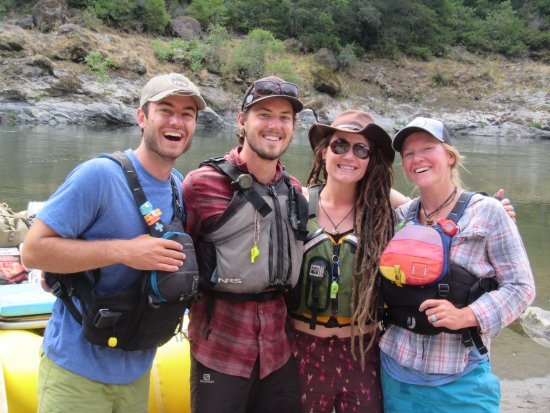

At Grand Water Rapids, we're on a mission to blend the excitement of whitewater rafting with a deep reverence for our planet's beauty. Through thrilling adventures and sustainable practices, we strive to inspire a lifelong love for both adventure and nature.
Grand Water Rapids
Grand Water Rapids started in 2006, born from the shared passion of river enthusiasts craving adventure. Since then, we've been dedicated to providing thrilling rafting experiences while preserving the natural beauty that surrounds us.
Our website caters to adventurous individuals aged 18 to 45, seeking thrilling outdoor experiences. They expect comprehensive information on water rafting tours and safety measures, primarily accessing the website through mobile devices for convenient browsing and booking.